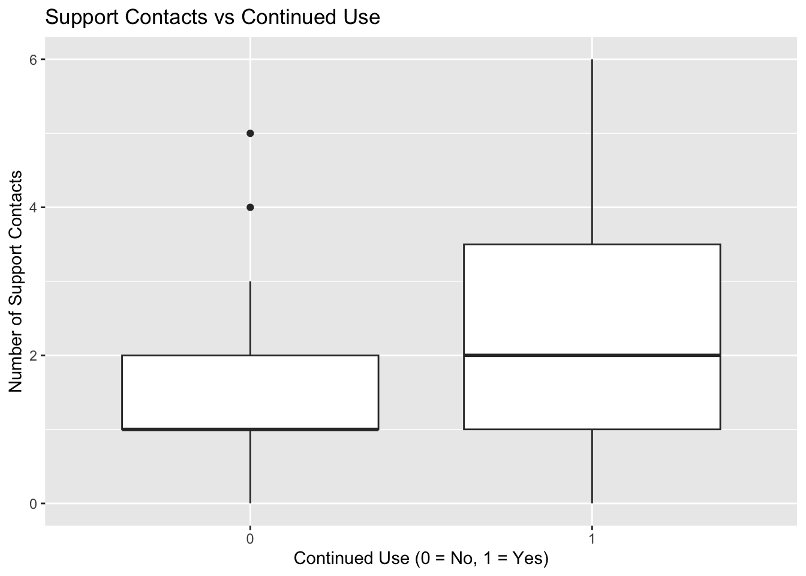

This chapter covers logistic regression, which is used when the outcome variable is binary. We will use an example dataset to investigate whether the frequency of technical support contact predicts whether a user continues to use a software product.
6.2 Example Question
Does the frequency of contacting technical support predict whether a user will continue using a software product?
6.3 Required Packages (R)
# Load the necessary packages library(tidyverse) # used for data manipulation and visualization
Warning: package 'ggplot2' was built under R version 4.2.3
── Attaching core tidyverse packages ──────────────────────── tidyverse 2.0.0 ──
✔ dplyr 1.1.1 ✔ readr 2.1.4
✔ forcats 1.0.0 ✔ stringr 1.5.0
✔ ggplot2 3.5.1 ✔ tibble 3.2.1
✔ lubridate 1.9.2 ✔ tidyr 1.3.0
✔ purrr 1.0.1
── Conflicts ────────────────────────────────────────── tidyverse_conflicts() ──
✖ dplyr::filter() masks stats::filter()
✖ dplyr::lag() masks stats::lag()
ℹ Use the conflicted package (<http://conflicted.r-lib.org/>) to force all conflicts to become errors
library(broom) # for tidying the model output, making it easier to work with# to install any missing packages go to the Terminal and run the command: install.packages("PACKAGE_NAME")
6.4 Simulating the Dataset in R
# Setting a seed for reproducibilityset.seed(123)# Simulating datan <-200support_contact <-rpois(n, lambda =2) # Number of contacts with supportcontinued_use <-rbinom(n, size =1, prob =1/ (1+exp(-(-1+0.5* support_contact))))# Creating a data framedata <-data.frame(support_contact, continued_use)# Viewing the first few rows of the datasethead(data)
* Set seedfor reproducibilitysetseed 123* Simulate datasetobs 200gen support_contact = rpoisson(2)gen continued_use = rbinomial(1, 1 / (1 + exp(-(-1 + 0.5 * support_contact))))* View the first few rowslistin 1/10
6.6 Visualizing the Descriptives in R
# Plotting the distribution of support contacts for users who continued vs those who didn'tggplot(data, aes(x =factor(continued_use), y = support_contact)) +geom_boxplot() +labs(title ="Support Contacts vs Continued Use",x ="Continued Use (0 = No, 1 = Yes)",y ="Number of Support Contacts")

6.7 Visualizing the Descriptives in Stata
* Box plot of support contacts by continued usegraph box support_contact, over(continued_use) title("Support Contacts vs Continued Use") ///ytitle("Number of Support Contacts") xtitle("Continued Use (0 = No, 1 = Yes)")
6.8 Running the Logistic Regression in R
# Fitting the logistic regression modellogistic_model <-glm(continued_use ~ support_contact, data = data, family ="binomial")# Viewing the summary of the logistic regression modelsummary(logistic_model)
Call:
glm(formula = continued_use ~ support_contact, family = "binomial",
data = data)
Deviance Residuals:
Min 1Q Median 3Q Max
-2.2697 -0.9883 0.5643 1.0621 1.7118
Coefficients:
Estimate Std. Error z value Pr(>|z|)
(Intercept) -1.2023 0.3046 -3.947 7.90e-05 ***
support_contact 0.7398 0.1453 5.092 3.54e-07 ***
---
Signif. codes: 0 '***' 0.001 '**' 0.01 '*' 0.05 '.' 0.1 ' ' 1
(Dispersion parameter for binomial family taken to be 1)
Null deviance: 274.83 on 199 degrees of freedom
Residual deviance: 240.15 on 198 degrees of freedom
AIC: 244.15
Number of Fisher Scoring iterations: 4
6.9 Running the Logistic Regression in Stata
* Fit the logistic regression modellogit continued_use support_contact
6.10 Interpreting the Output
6.10.1 In R
The summary of the logistic regression model provides the following key pieces of information: - Coefficients: Estimates of the regression coefficients. - Std. Error: Standard errors of the coefficients. - z value: The test statistic for each coefficient. - Pr(>|z|): The p-value associated with each coefficient, indicating whether it is statistically significant.
6.10.2 In Stata
The output of the logistic regression in Stata provides similar information: - Coef.: Estimates of the regression coefficients. - Std. Err.: Standard errors of the coefficients. - z: The test statistic for each coefficient. - P>|z|: The p-value associated with each coefficient, indicating whether it is statistically significant.
If the p-value is less than the significance level (typically 0.05), we reject the null hypothesis that the coefficient is equal to zero.
6.11 Plotting the Results in R
# Plotting the logistic regression curveggplot(data, aes(x = support_contact, y = continued_use)) +geom_point(alpha =0.5) +geom_smooth(method ="glm", method.args =list(family ="binomial"), se =FALSE) +labs(title ="Logistic Regression: Probability of Continued Use",x ="Number of Support Contacts",y ="Probability of Continued Use") +theme_minimal()